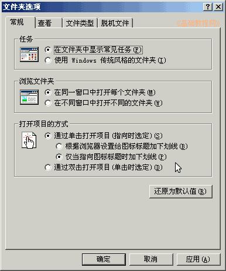
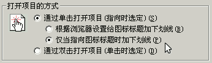
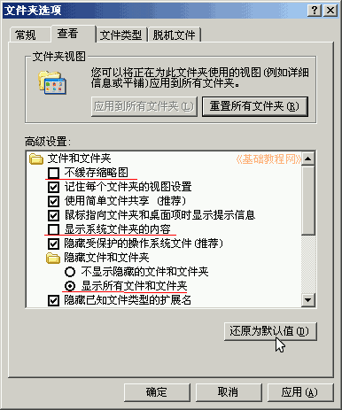
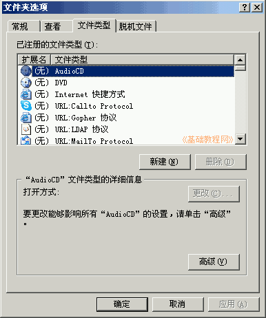
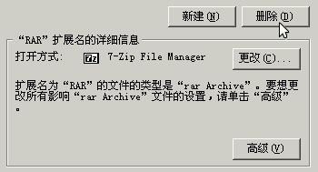

控制面板基础教程
作者：TeliuTe 来源：基础教程网
文件夹选项可以设置文件夹的外观、显示样式等，下面我们来看一个练习；
1、文件夹选项
1）进入经典视图，点“文件夹选项”图标出来一个面板；
2）里面包括常规、查看、文件类型和脱机文件几个标签，常用的是前两个；

2、设置选项
1）在常规里，可以设置在文件夹左侧显示常见任务，在下边还可以设置单击打开，操作方便快捷；

2）在“查看”标签里，可以设置显示所有文件，显示文件扩展名等，如果改乱里可以点“还原为默认值”按钮；

3）文件类型标签里，可以查看各个扩展名文件类型，是用哪一个应用程序打开，

如果关联错了可以在这儿删除或更改；

本节学习了文件夹选项的基础知识，如果你成功地完成了练习，请继续学习下一课内容；
本教程由86团学校TeliuTe制作|著作权所有
基础教程网：http://teliute.org/
美丽的校园……
转载和引用本站内容，请保留版权信息和本站链接。